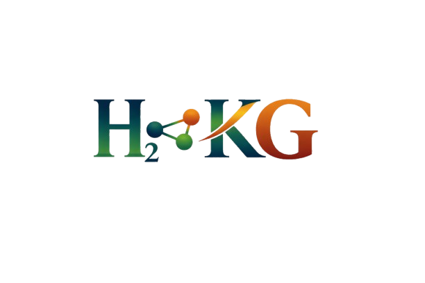

AIMWORKS Layer
AIMWORKS remains the domain-specific documentation and release layer for H2KG, including FAIR reporting, profile generation for PEMFC and PEMWE, w3id assets, release bundles, and custom HTML docs.
H2KG Ontology
EMMO-aligned ontology for hydrogen electrochemical systems, experiments, materials, measurements, and FAIR metadata

Ontology releaseAIMWORKS remains the domain-specific documentation and release layer for H2KG, including FAIR reporting, profile generation for PEMFC and PEMWE, w3id assets, release bundles, and custom HTML docs.
ODK now runs as a nested shadow-mode ontology engineering backend for edit-file management, import refresh, ROBOT-oriented QC, and standard machine artefacts such as base, full, and simple.
Current status: shadow. Public H2KG IRIs remain unchanged.
The pemfc and pemwe profiles remain AIMWORKS outputs in v1. ODK does not replace them or publish a competing documentation site.
H2KG Application Ontology for Hydrogen Electrochemical Systems keeps the current profile-oriented website while gaining a standards-based machine release and QC backend.
HDO is integrated as the Helmholtz-community anchor for digital-data concepts, complementing EMMO/ECHO, QUDT, ChEBI, and PROV-O / DCTERMS.
Reviewed against HDO: 96 | Aligned: 0